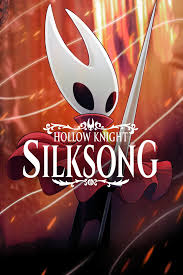
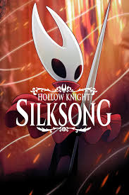

My Interests & Hobbies
Outside of my major, I am also interested in many things that make me a balanced. Here's a couple of things that I enjoy.
Video Games
I enjoy many games, but I enjoy story indie games the most. I really want to work on high-quality, affordable games for the masses that entertained me in my childhood

 

My Favorite Games
- Hollow Knight: Silksong - I love the art style, theme of worthiness, and the dynamic gameplay
- Deltarune - It stresses the importance of friendships in life, and how not making them limits yourpathway
- Undertale - The ultimate storytelling game. It puts an interesting awareness in my actions
- Hades - The idea of being bound by your elders' reputation is quite relatable.
- Shovel Knight - It's a great game, and it's story is a bit silly, but the game itself has a really fun movement style
Why I like indie games
I like indie games because they promote a message. For example, game series like Mario or Sonic have become money grabs. Companies see their success and use the brand to make money, rather than look at video games as a form of art. Indie games are more raw, and use their unique concepts as a selling point.
Board Games

My Origins in Board Games
I've enjoyed board games since I was a child. My father used to play games like WoW and D&D.I looked at the synergies and thought he put into these games, and I wanted to play games as complex as he did. Video games didn't provide the same feeling as board games because the many inputs on a controller or a keyboard adds too much grey area to be a game of complete strategy.
My favorite board games
- Root by Leder Games
- Arcs by Leder Games
- Western Legends by Kolossal Games
- Catan by Klaus Teuber
Taekwondo
Unfortunately, I injured myself in may 2025. After the summer of recovery, I managed to get back to my favorite sport. I began doing taekwondo when I was 4 years old. Despite what my expectations are, I have still not developed a flexible body. This sport also teaches about control. When I was younger, I exhibited as much force as possible on problems: i.e repeatedly adding numbers rather than memorize the multiplication. Taekwondo helped me change my blunt force strategy, teaching me that there's a way around every problem besides creating your own methods. Using what I've been taught in taekwondo helps me bring peace and justification to all of my actions
How My Interests Connect to CompSci
Video games are closely related to computer science, in the sense that they are software designed for entertainment purposes. Board games are similar, but they take all of the systems in video games, and adapt them physically with more rigid motion. Taekwondo might seem like it's unrelated to computer science, but the truth is, moving around problems with logic is something every computer scientist has to do. I've trained my body to do it, and my mind will follow suit